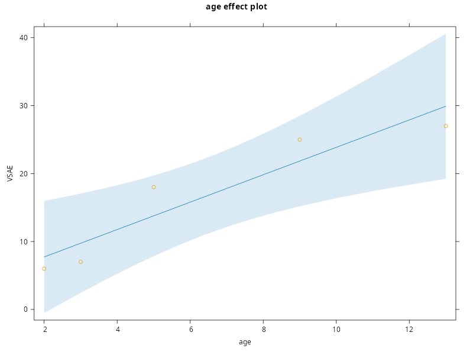
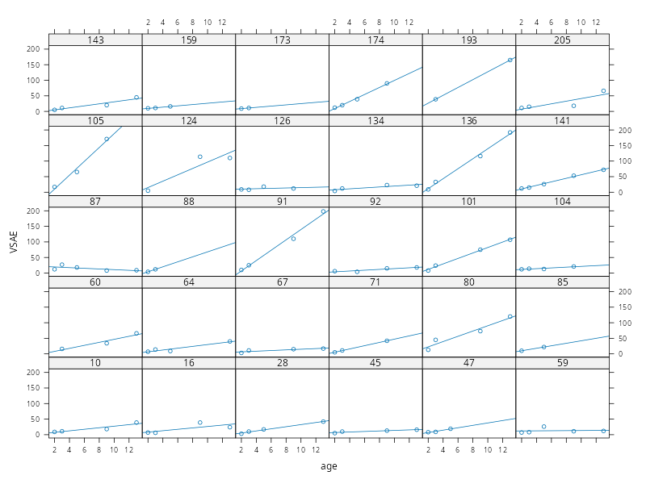
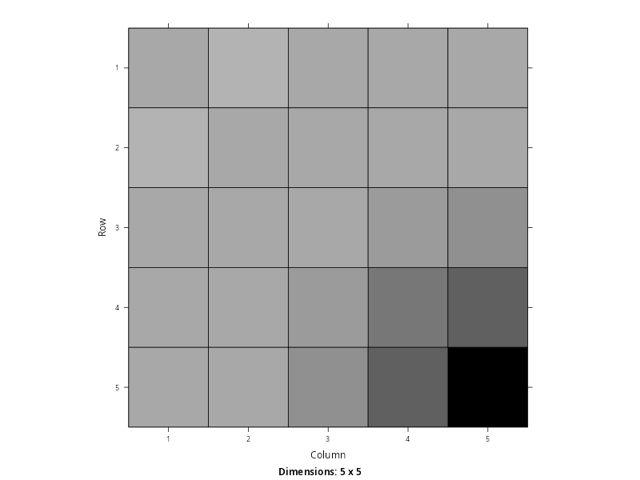
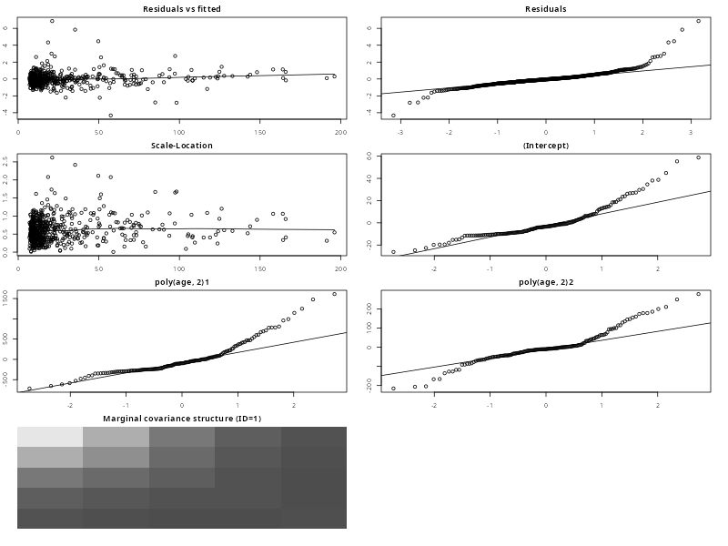
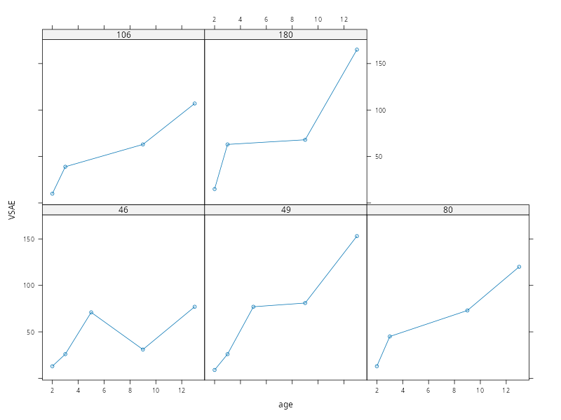
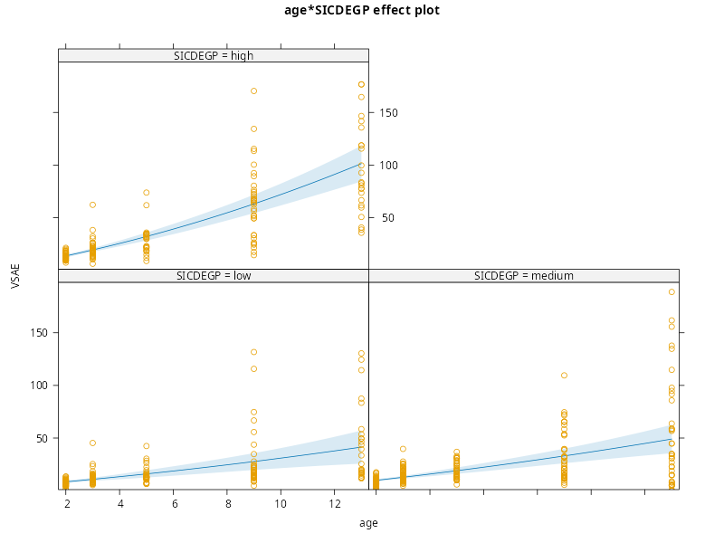

PCHN63112 Workshop: Longitudinal Data Example#
In this example,we will examine building a mixed-effects model for longitudinal data. Unlike repeated measurements, longitudinal data has a specific temporal ordering that needs to be taken into account. In addition, the actual gaps of time between the measurements are important and must be accommodated. In general, this means dealing with trends over time, where time must be treated as a continuous variable. In repeated measurements, the repeats are treated as levels of a factor. As such, our interest is estimating and comparing means. By comparison, with longitudinal data the repeats are treated as measurements associated with a continuous variable. As such, our interest is estimating and comparing regression slopes over time.
Loading Packages#
We will start by loading all the packages that we need at the beginning. This will tidy-up the output, allow any messages or warnings to not clutter up the rest of the output and not bury any packages within the main body of the analysis. We also use source() on the file plot-lme.R. This needs to be in the current working directory and will bring the custom function plot.lme() into scope.
library('lattice') # plotting functions
library('Matrix') # covariance extraction and visualisation
library('nlme') # mixed-effects modelling
library('car') # Asymptotic ANOVA tests
library('emmeans') # Follow-up tests
library('effects') # Effects plots from the model
source('plot-lme.R') # custom plot.lme() function for making assumptions plots
Loading required package: carData
Welcome to emmeans.
Caution: You lose important information if you filter this package's results.
See '? untidy'
Use the command
lattice::trellis.par.set(effectsTheme())
to customize lattice options for effects plots.
See ?effectsTheme for details.
The Autism Data#
The data we will use concern measurements of socialisation in 158 children diagnosed with autism spectrum disorder (ASD). The children were measured at ages 2, 3, 5, 9, and 13. The outcome variable is the Vineland Socialisation Age Equivalent (VSAE) score, which combines multiple assessments of socialisation at each age. Also of interest was the children’s initial language development. This was measured using the Sequenced Inventory of Communication Development (SICD) at age 2 and the children were placed into groups depending upon whether they scored low, medium or high on the expressive language subscale. The main interest of the study was to assess how socialisation improved over time, as well as whether this improvement had any relationship with the child’s initial language skills at age 2.
The data are available to download from here. Once downloaded to the current working directory, the code below will read the data in and then print the values for the first 3 children.
autism <- read.csv('autism.csv')
autism[1:14,]
age vsae sicdegp childid
1 2 6 3 1
2 3 7 3 1
3 5 18 3 1
4 9 25 3 1
5 13 27 3 1
6 2 17 3 3
7 3 18 3 3
8 5 12 3 3
9 9 18 3 3
10 13 24 3 3
11 2 12 3 4
12 3 14 3 4
13 5 38 3 4
14 9 114 3 4
As this is already long-formatted, we just need to convert the relevant variables to factors. We also capitalise VSAE and SICDEGP for clarity, and rename the levels associated with SICDEGP to make their meaning clearer.
autism$childid <- as.factor(autism$childid)
autism$sicdegp <- as.factor(autism$sicdegp)
levels(autism$sicdegp) <- c('low','medium','high')
colnames(autism) <- c('age','VSAE','SICDEGP','childid')
We can now briefly summarise all the variables to check everything is in order.
summary(autism)
age VSAE SICDEGP childid
Min. : 2.000 Min. : 1.00 low :192 1 : 5
1st Qu.: 2.000 1st Qu.: 10.00 medium:255 2 : 5
Median : 4.000 Median : 14.00 high :165 3 : 5
Mean : 5.771 Mean : 26.41 14 : 5
3rd Qu.: 9.000 3rd Qu.: 27.00 15 : 5
Max. :13.000 Max. :198.00 17 : 5
NA's :2 (Other):582
Of note is that VSAE has a very wide range, from 1-198, and also contains two missing values. This indicates that there were some occasions when a particular child was not measured. There are also more children in the medium group than the others, making the data unbalanced in relation to SICDEGP. Also note that childid does not run sequentially, as these data represent a subset of the children who participated in the original study.
Model Notation#
In order to facilitate consistency across the examples in these workshops, we will represent all models using more general regression notation. For instance, whether a variable is categorical or continuous, it will be written in the model as e.g. \(\beta_{1}x_{i1}\). In the categorical case, it will be implicitly assumed that \(x_{i1}\) is a dummy variable. Although this will make the notation for models that only contain categorical variables busier, it will make things much clearer when we have models that contain both categorical and continuous predictors (as is the case with this example). In addition, we will be using variable labels going forward, rather than generic notation (e.g. \(\beta_{1} \times \text{SICDEGP}_{j}\) rather than \(\beta_{1}x_{i1}\)). This should hopefully make it clearer which variable each term relates to when writing the model down.
Data Structure#
Although we already know what structure these data have, we will run through the logic for completeness.
Firstly, we need to determine our unit of analysis. In this example, our model is trying to explain the socialisation skills of children with ASD. The entities that our model is describing are the scores of the children, and so our units of analysis are the children themselves.
Secondly, we determine what each row of the long-formatted data represents in relation to the units of analysis. Examining the first few rows
head(autism)
age VSAE SICDEGP childid
1 2 6 high 1
2 3 7 high 1
3 5 18 high 1
4 9 25 high 1
5 13 27 high 1
6 2 17 high 3
we can see that each row corresponds to a single unit (child) measured multiple times. So these are either repeated measurements or longitudinal data. The difference lies in whether there is an explicit measurement of time here. As we can see, the different repeats are indexed by the values of age. Importantly, these values have an order that must be maintained and the temporal gap between successive values is not uniform. The time scale is also meaningful, as it is measured in years. As such, this is longitudinal data.
Finally, we need to determine whether there are any clustering variables that represent a higher-order dependency structure in these data. The only potential candidate is SICDEGP, but we know from the data description above that this is an artificial experimental grouping based on the child’s language skills at age 2. It is not indicative of a shared context or environment that binds different children together. As such, this is clearly a grouping variable rather than a clustering variable. Based on this, we can construct the following table of the levels of these data, using the guidance in the lesson
Data Type |
Longitudinal |
|---|---|
Dataset |
|
Level 1 |
Repeats over time |
Level 2 |
Child |
Level 3 |
- |
Because these data are quite simple, we can get an initial sense of their structure by constructing a graph of child-specific trajectories over time for each level of SICDEGP
xyplot(
VSAE ~ age|SICDEGP, # x-axis=age, panel=SICDEG
groups = childid, # separate lines per-child
data = autism, # data
type = "b" # lines with points
)
Several patterns are noticeable here. Firstly, the variance appears to increase as a function of age, getting wider and wider as age increases. Whatever model we choose, we will need to make sure that the variance estimated for each value of time increases appropriately. Secondly, there is a slight hint that some of these trajectories are not linear, rather they bend upwards. As such, we may wish to entertain a quadratic model of time as well.
Model Building#
To build a model of this dataset, we use the 3-step procedure outlined in the lesson. We assume at this point that the data has been investigated, wrangled, cleaned and are ready for modelling.
Step I: A Single Dependency Structure#
We start by isolating a single dependency structure which, in this example, is a single child. We choose the first child in the dataset, who is indexed using childid == '1'. We subset the data below
autism.1 <- subset(autism, childid=='1')
print(autism.1)
age VSAE SICDEGP childid
1 2 6 high 1
2 3 7 high 1
3 5 18 high 1
4 9 25 high 1
5 13 27 high 1
In terms of those variables suitable for a model of an individual child, we note that SICDEGP is constant, given that this is defined at the level of a child as a whole. As such, we remove it from the dataset
autism.1 <- subset(autism, childid=='1', select= -SICDEGP) # remove SICDEGP
print(autism.1)
age VSAE childid
1 2 6 1
2 3 7 1
3 5 18 1
4 9 25 1
5 13 27 1
Now we can see that the only variables left are the outcome variable VSAE and the continuous time predictor of age. As such, our basic model for a single child is
which is just the simple regression of VSAE on age. We can fit this in R if we like, just to see that this works
autism.1.lm <- lm(VSAE ~ 1 + age, data=autism.1)
summary(autism.1.lm)
Call:
lm(formula = VSAE ~ 1 + age, data = autism.1)
Residuals:
1 2 3 4 5
-1.726 -2.743 4.224 3.156 -2.911
Coefficients:
Estimate Std. Error t value Pr(>|t|)
(Intercept) 3.6923 3.2855 1.124 0.3429
age 2.0168 0.4329 4.659 0.0187 *
---
Signif. codes: 0 ‘***’ 0.001 ‘**’ 0.01 ‘*’ 0.05 ‘.’ 0.1 ‘ ’ 1
Residual standard error: 3.949 on 3 degrees of freedom
Multiple R-squared: 0.8786, Adjusted R-squared: 0.8381
F-statistic: 21.7 on 1 and 3 DF, p-value: 0.01866
which we could then plot, just to make the model as clear as possible.
plot(allEffects(autism.1.lm, residuals=TRUE), partial.residuals=list(smooth=FALSE))

Notably, there is not a huge amount of data per-child. Only 5 datapoints in the example above, with some children having even fewer due to attrition over time. We can get a sense of the data within the whole sample by plotting a random subset of children
set.seed(666)
keep.IDs <- sample(unique(autism$childid), 30) # select 30 random children IDs
xyplot(VSAE ~ age | childid, # x-axis=age, panels=child
data = subset(autism, childid %in% keep.IDs), # only random child IDs
type = c('p','r') # points and regression lines
)

In most cases, there is enough data to fit the model. In some cases, the fit will be perfect (e.g. child 173 and child 85). It is also notable from this visualisation how different the trajectories over time are for different children. Some show no improvements in socialisation, whereas others show a dramatic improvement over time. This would seem to justify treating these effects of age as varying per-child, rather than fixed across all children.
Step II: Expand to Multiple Structures#
In our second step, we expand the model above to multiple children. We index these using the notation of \((k)\) to indicate which terms belong to a particular child. We start with the most general case of allowing every term to vary by child, giving us
In this model, each child gets their own unique intercept \(\left(\beta_{0}\right)\) and their own unique age slope \(\left(\beta_{1}\right)\). We can reason about each of these terms, in conjunction with the plots made above.
In terms of the intercept, if we wish to use a mixed-effects model then the bear minimum is a random intercept. This alone could be enough to decide on this term, but it is worth considering the meaning of doing this as well. In the current model, the intercept will represent the value of VSAE at an age of 0, which obviously does not make too much sense. We could change this by either centering age (e.g. age - mean(age)) or by subtracting a value of 2 (e.g. age - 2). In the former case, the intercept would represent the value of VSAE at the average age of the sample, and in the latter case, the intercept would represent the value of VSAE at an age of 2. We will not do either of these, just to keep things simple. In both cases, the interpretation of the intercept would change, but its role remains the same: it is the starting point of the slope. As such, the choice between fixed and random remains the same. If we choose to fix the intercept then we are saying that all children start with the same value of VSAE and any variation is simply sampling error. If we allow the intercept to be random, we are saying that all children will start with different values of VSAE and that this variation represents something fundamental about the children as different entities. More generally, it allows us to treat the children as a random sample from a distribution of children. So, in both senses, it seems most justifiable to keep the intercept as random.
In terms of the age slope, if we choose to fix this term, we are saying that the change in socialisation over time is the same for every child. There is a constant effect of time and any variation we see is just sampling error. If we sampled children infinitely, we would end up seeing the same average slope for each one of them. In other words, the individual child does not matter. Alternatively, if we allow the slope to be random, we are saying that each child has their own unique trajectory over time and children will not converge on the same value. Their slopes represent something fundamental about each child as a unique entity. Unlike other examples we have seen, this would seem to be a fairly obvious choice given the plausibility of this description and the plots we have seen above. As such, we choose here to allow the slope to be random as well.
Step III: Write the Higher-level Models#
Now that we have made decisions about all the Level 1 terms, we can write the Level 2 models. As both the intercept and the slope are random, they are both conceived as being drawn from distributions with some mean and some variance, which we tend to write in mean + error form as
We can now determine whether there are any child-level predictors we want to include as well. In this dataset, we have the SICD grouping variable SICDEGP. So now, we can include an additional index \(j\) to show that a specific child is associated with level \(j\) of SICDEGP. We can then include the effect of SICDEGP within the Level 2 models, like so
where \(\text{SICDEGP}_{1j}\) and \(\text{SICDEGP}_{2j}\) are the two dummy variables that code the 3 levels of SICDEGP, defined as follows
As written, this implies only a main effect of SICDEGP, as it only appears in the model for the intercept. In other words, the grouping serves only to shift the intercept up or down, but it does not influence the slope. If we want to also include the interaction between SICDEGP and age, then we need new terms in the model for the slope. This will allow the slope to be shifted, depending upon the group. The model is then
This may not look much like an interaction at present, however, we will see what happens when we collapse the levels together in the next step.
Fitting the Model in R#
In order to fit the model in R, we have to collapse all the levels together. Key to seeing how this works is recognising that all the terms in the definition of \(\beta_{1}^{(k)}\) at Level 2 will by multiplied by \(\text{age}_{i}\) when they are collapsed into Level 1. For instance, at Level 1 we have
but the definition of \(\beta_{1}^{(k)}\) from Level 2 is
So, expanding \(\beta_{1}^{(k)}\) in Level 1 to its full definition from Level 2 gives
Removing the brackets then results in
illustrating how the interaction terms are formed through the different levels of the model.
After continuing in this fashion and reordering the terms, we have
To see how to specify the random effects, we isolate the random terms
and remove the final errors, as they do not need to be specified
We then adjust the conditional notation and we get
which we can then simply translate to 1 + age|childid. You can think of this as fitting a simple regression of age for each child separately.
Our model is therefore expressed by the following lme() syntax
autism.lme <- lme(fixed = VSAE ~ 1 + age + SICDEGP + SICDEGP:age,
random = ~ 1 + age|childid,
data = autism,
na.action = na.omit,
control = lmeControl(opt='optim')
)
print(autism.lme)
Linear mixed-effects model fit by REML
Data: autism
Log-restricted-likelihood: -2348.065
Fixed: VSAE ~ 1 + age + SICDEGP + SICDEGP:age
(Intercept) age SICDEGPmedium SICDEGPhigh age:SICDEGPmedium age:SICDEGPhigh
1.8431741 2.9719752 -0.3247815 -3.8581067 0.7151603 4.3348154
Random effects:
Formula: ~1 + age | childid
Structure: General positive-definite, Log-Cholesky parametrization
StdDev Corr
(Intercept) 8.602952 (Intr)
age 4.019888 -0.998
Residual 7.769026
Number of Observations: 610
Number of Groups: 158
Notice that we have had to pass the na.omit option to tell lme() what to do with the NA values. Although mixed-effects models can deal with missing data, this is only true if values are missing by omission, not missing by replacing them with non-numeric values.
We can have a look at the marginal covariance structure that this model has resulted in
Sigma.1 <- getVarCov(autism.lme, type='marginal', individual='1')$`1`
print(Sigma.1)
image(as(Sigma.1,'Matrix'))
1 2 3 4 5
1 60.932515 -1.624765 -6.023787 -14.82183 -23.61988
2 -1.624765 72.692989 40.255191 96.09513 151.93507
3 -6.023787 40.255191 193.170916 317.92906 503.04497
4 -14.821831 96.095133 317.929061 821.95469 1205.26477
5 -23.619876 151.935074 503.044974 1205.26477 1967.84234

Notably, the variance increases as a function of age, which is precisely what we desired given the plots from earlier. The correlation structure is a little difficult to understand on the scale of covariance, but we can convert this to correlation using
cov2cor(Sigma.1)
1 2 3 4 5
1 1.00000000 -0.02441292 -0.05552316 -0.06622979 -0.06821155
2 -0.02441292 1.00000000 0.33970721 0.39312548 0.40171369
3 -0.05552316 0.33970721 1.00000000 0.79787603 0.81590725
4 -0.06622979 0.39312548 0.79787603 1.00000000 0.94768362
5 -0.06821155 0.40171369 0.81590725 0.94768362 1.00000000
This is somewhat curious, as it indicates that socialisation at age 2 is negatively correlated with subsequent scores at different ages. For all other ages, the socialisation scores are positively correlated with their future values.
Alternative Models#
Before we get to checking assumptions and performing inference, it is a good idea to consider other model forms. Effectively, we want to get to our final model before performing these steps. This is both practical, as it prevents multiple confusing round of assumption checking and inference, and is also a guard against bias, particularly if we know the results of a given model specification. This sequence is therefore a self-imposed protection against being swayed by \(p\)-values more than the logic of building a sensible model.
A Quadratic Effect of age#
As mentioned earlier, there is a slight hint that some of the trajectories are curved and so we could consider whether a quadratic effect of age is warranted. There are three ways this could enter the model: fixed-effects only, random-effects only and both. We will consider all these below in terms of model comparisons using the BIC() function. Of importance is that we set method='ML'. In addition, we make use of the update() function to only change a subset of options to form each new model.
autism.lme.null <- lme(fixed = VSAE ~ age*SICDEGP,
random = ~ 1 + age|childid,
data = autism,
na.action = na.omit,
control = lmeControl(opt='optim', msMaxIter=100), # increase iterations to allow convergence
method = 'ML'
)
autism.lme.full <- update(autism.lme.null,
fixed = VSAE ~ poly(age,2)*SICDEGP,
random = ~ 1 + poly(age,2)|childid)
mod.comp <- BIC(autism.lme.null,autism.lme.full)
print(mod.comp)
BIC.delta <- abs(mod.comp$BIC[1] - mod.comp$BIC[2])
paste0('Change in BIC = ', round(BIC.delta,2))
df BIC
autism.lme.null 10 4767.514
autism.lme.full 16 4706.372
[1] "Change in BIC = 61.14"
This indicates very strong evidence in favour of the lower BIC model. In this comparison, the lower BIC model is the one with the quadratic terms, so there is evidence that some sort of curve is beneficial here. So, based on this, our final model is
autism.lme <- lme(fixed = VSAE ~ 1 + poly(age,2) + SICDEGP + poly(age,2):SICDEGP,
random = ~ 1 + poly(age,2)|childid,
data = autism,
na.action = na.omit,
control = lmeControl(opt='optim', msMaxIter=100)
)
which, written formally, becomes
We can see what effect this has had on the modelled covariance structure
Sigma.1 <- getVarCov(autism.lme, type='marginal', individual='1')$`1`
print(Sigma.1)
image(as(Sigma.1,'Matrix'))
1 2 3 4 5
1 39.107184 2.398842 6.180047 24.04741 55.6547
2 2.398842 53.710473 44.290509 99.62922 154.3773
3 6.180047 44.290509 158.025707 274.37743 429.1250
4 24.047408 99.629223 274.377425 755.52294 1287.8312
5 55.654705 154.377261 429.125030 1287.83120 2596.1290

Looking again at the correlation specifically
cov2cor(Sigma.1)
1 2 3 4 5
1 1.00000000 0.05234123 0.07861395 0.1398995 0.1746668
2 0.05234123 1.00000000 0.48074780 0.4945764 0.4134193
3 0.07861395 0.48074780 1.00000000 0.7940735 0.6699723
4 0.13989950 0.49457644 0.79407345 1.0000000 0.9195429
5 0.17466684 0.41341926 0.66997229 0.9195429 1.0000000
The slightly odd situation with negative correlations has been resolved by allowing the trajectories of individual children to curve, rather than forcing them to be linear.
Simplifying the Random Effects#
At this point, we could also look at simplifying the random effects. Although we saw above that a quadratic model of the child-specific slopes was better than a linear fit, we could also examine whether we need a child-specific effect of age at all. Based on reason alone, this should be there, but we can see what the data say.
autism.lme.null <- lme(fixed = VSAE ~ poly(age,2)*SICDEGP,
random = ~ 1|childid,
data = autism,
na.action = na.omit,
control = lmeControl(opt='optim', msMaxIter=100),
method = 'ML'
)
autism.lme.full <- update(autism.lme.null, random = ~ 1 + poly(age,2)|childid)
mod.comp <- BIC(autism.lme.null,autism.lme.full)
print(mod.comp)
BIC.delta <- abs(mod.comp$BIC[1] - mod.comp$BIC[2])
paste0('Change in BIC = ', round(BIC.delta,2))
df BIC
autism.lme.null 11 5520.604
autism.lme.full 16 4706.372
[1] "Change in BIC = 814.23"
So we very much do prefer having age as a random effect. This confirms our suspicions and demonstrates that our reasoning appeared to be accurate. So, we keep the model with the quadratic effect of age as a random slope term.
Additional Variance Structures#
As a final consideration, we can think about whether there are any additional variance structure we may wish to capture. At present, our model is assuming that the variance across the levels of SICDEGP is homogenous. So, we could entertain a model that allows these variances to differ. Unfortunately, this is too complex for the data to support. If we try it, we get singular precision errors, which is effectively telling us that there is not enough left-over after fitting the fixed-effects and our complex polynomial random-effects to actually estimate a different variance for each level in SICDEGP. So, unfortunately, we will need to abandon this idea and keep the variance homoscedastic. Our final model is therefore
autism.lme <- lme(fixed = VSAE ~ 1 + poly(age,2) + SICDEGP + poly(age,2):SICDEGP,
random = ~ 1 + poly(age,2)|childid,
data = autism,
na.action = na.omit,
control = lmeControl(opt='optim', msMaxIter=100)
)
Checking Assumptions#
To check the assumptions, we will use the custom function plot.lme(), which we brought into scope at the beginning of the analysis. This results in the following plots.
plot.lme(autism.lme, vcov.id='1')

In terms of the plots, there are a few elements of note. Firstly, the distributions of the random effects all show heavy tails and so precise equivalence to normal distributions is difficult to justify. To an extent, some of this is due to some potential outliers, as can be seen by a number of data points with standardised residuals > 3. We can extract these using the code below
res.norm <- resid(autism.lme, type="normalized") # get normalised residuals
idx <- which(abs(res.norm) > 3) # identify which are > 3
mod.data <- nlme::getData(autism.lme) # get data used in the fit
outliers <- mod.data[idx, ] # subset the data based on the outliers
outliers$resid <- res.norm[idx] # add the residuals as a column for comparison
print(outliers)
age VSAE SICDEGP childid resid
37 5 71 high 46 5.845105
38 9 31 high 46 -4.320342
46 5 77 high 49 4.470470
83 3 39 high 106 3.002857
133 3 63 high 180 6.863016
497 3 45 low 80 4.333835
A few details about this process. Firstly, we want to extract the normalised residuals and then find the indices (row numbers) associated with those points with absolute values greater than 3. However, remember that lme() removed some data due to us passing the na.omit option. As such, the indices of the residuals will now no longer match the raw data. To solve this, we ask nlme to give us the data it used for the fitting, not the raw data. This is what nlme::getData() does. This then allows us to successfully identify the correct points.
Before discussing these points, we can first visualise the trajectories of those children identified in the list of outliers
xyplot(
VSAE ~ age|childid, # x-axis=age, panel=child
data = subset(autism, childid %in% outliers$childid), # only outlier children
type = "b" # lines with points
)

In terms of these, child 46 seems a little odd. Not only did they score very high on socialisation at age 5, they then proceeded to score very low at age 9 and went back up again at age 13. This seems unlikely and may suggest that either the measurement at age 5 is erroneous, the measurement at age 9 is erroneous, or both. For the remaining children, it is more difficult to make a judgement. Their trajectories do not necessarily seem out of the ordinary. The largest outlier is associated with child 180 at age 3, where their VSAE score is much higher than any other children at that age. Unless we had reason to think that a score of 63 is unreasonable at age 3, we have no great justification for removing the child. In most cases, the lack of fit is likely because none of these trajectories can be as well-captured by either a straight or quadratic curve. However, just because a child scores well-below or well-above expectation at a given age, this is not a reason to remove them without further justification. However, we have some suspicions about child 46 and so will choose to remove them.
autism.lme <- lme(fixed = VSAE ~ 1 + poly(age,2) + SICDEGP + poly(age,2):SICDEGP,
random = ~ 1 + poly(age,2)|childid,
data = autism,
na.action = na.omit,
control = lmeControl(opt='optim', msMaxIter=100),
subset = childid != '46' # remove child 46
)
Inference#
We have now reached the inference element of the analysis. We can start by viewing the model fit via summary(), though we will ignore the inferential tests
summary(autism.lme)
Linear mixed-effects model fit by REML
Data: autism
Subset: childid != "46"
AIC BIC logLik
4485.458 4555.702 -2226.729
Random effects:
Formula: ~1 + poly(age, 2) | childid
Structure: General positive-definite, Log-Cholesky parametrization
StdDev Corr
(Intercept) 15.562463 (Intr) p(,2)1
poly(age, 2)1 428.834949 0.986
poly(age, 2)2 114.054038 0.458 0.597
Residual 5.622703
Fixed effects: VSAE ~ 1 + poly(age, 2) + SICDEGP + poly(age, 2):SICDEGP
Value Std.Error DF t-value p-value
(Intercept) 18.9942 2.37477 442 7.998330 0.0000
poly(age, 2)1 291.3561 67.74312 442 4.300896 0.0000
poly(age, 2)2 17.1364 22.66800 442 0.755973 0.4501
SICDEGPmedium 3.5226 3.13504 154 1.123619 0.2629
SICDEGPhigh 22.1237 3.51751 154 6.289603 0.0000
poly(age, 2)1:SICDEGPmedium 55.7714 89.29037 442 0.624607 0.5326
poly(age, 2)2:SICDEGPmedium 0.6724 29.78911 442 0.022572 0.9820
poly(age, 2)1:SICDEGPhigh 479.8958 99.71983 442 4.812442 0.0000
poly(age, 2)2:SICDEGPhigh 46.6440 33.08023 442 1.410025 0.1592
Correlation:
(Intr) pl(,2)1 pl(,2)2 SICDEGPm SICDEGPh ply(g,2)1:SICDEGPm ply(g,2)2:SICDEGPm ply(g,2)1:SICDEGPh
poly(age, 2)1 0.956
poly(age, 2)2 0.432 0.568
SICDEGPmedium -0.757 -0.725 -0.327
SICDEGPhigh -0.675 -0.646 -0.292 0.511
poly(age, 2)1:SICDEGPmedium -0.726 -0.759 -0.431 0.956 0.490
poly(age, 2)2:SICDEGPmedium -0.329 -0.433 -0.761 0.425 0.222 0.561
poly(age, 2)1:SICDEGPhigh -0.650 -0.679 -0.386 0.492 0.956 0.515 0.294
poly(age, 2)2:SICDEGPhigh -0.296 -0.390 -0.685 0.224 0.429 0.296 0.521 0.564
Standardized Within-Group Residuals:
Min Q1 Med Q3 Max
-3.13907996 -0.40058651 -0.04815231 0.28664200 7.51597537
Number of Observations: 605
Number of Groups: 157
As we can see, we have 9 fixed-effects commensurate with the 9 terms we wrote in the expanded polynomial model earlier. We also have 4 variances, commensurate with the 4 error terms from the expanded polynomial model. So everything is as expected.
We can now generate the ANOVA table of the effects
Anova(autism.lme)
Analysis of Deviance Table (Type II tests)
Response: VSAE
Chisq Df Pr(>Chisq)
poly(age, 2) 162.366 2 < 2.2e-16 ***
SICDEGP 33.127 2 6.406e-08 ***
poly(age, 2):SICDEGP 30.480 4 3.907e-06 ***
---
Signif. codes: 0 ‘***’ 0.001 ‘**’ 0.01 ‘*’ 0.05 ‘.’ 0.1 ‘ ’ 1
This indicates a significant age \(\times\) SICDEGP effect, suggesting that the relationship between age and VSAE changes depending upon the SICDEGP grouping. We plot this effect below
plot(allEffects(autism.lme, residuals=TRUE), partial.residuals=list(smooth=FALSE))

From this, it appears as if the age slope for children in the high group is steeper than the slopes for children in the medium or low groups. We will follow this up and compare these slopes formally.
Because our inference concerns comparing slopes rather than means, we make use of the emtrends() function, rather than the emmeans() function. This operates in a very similar way, we just need to remember that what we are comparing here are slope magnitudes rather than means. We also include the max.degree argument which provides comparisons of the slopes at different degrees of the polynomial. So we get tests of the linear component of the curves and tests of the quadratic element of the curves.
emm <- emtrends(autism.lme, pairwise ~ SICDEGP, var='age', mode='asymptotic', adjust='holm', max.degree=2)
print(emm$contrasts)
degree = linear:
contrast estimate SE df z.ratio p.value
low - medium -0.56392 0.781 Inf -0.722 0.4705
low - high -4.41587 0.872 Inf -5.063 <.0001
medium - high -3.85195 0.821 Inf -4.693 <.0001
degree = quadratic:
contrast estimate SE df z.ratio p.value
low - medium -0.00243 0.107 Inf -0.023 0.9820
low - high -0.16821 0.119 Inf -1.410 0.4100
medium - high -0.16579 0.111 Inf -1.488 0.4100
Degrees-of-freedom method: fixed
P value adjustment: holm method for 3 tests
Based on the tests of the linear component, we can see that the difference between the age slope at the low level of SICDEGP and the age slope at the medium level of SICDEGP is non-significant. We can also see that the change in magnitude is very small (0.56). By comparison, the difference between the age slope for low and high and the difference between the age slope for medium and high are both significant, with much larger shifts in the slope magnitude (4.42 and 3.85 respectively). This matches what we can see in the plot above.
In terms of the quadratic components, we can see none of the tests are significant, suggesting that the slopes do not differ in terms of their degree of bending. This is echoed in the plots above, where the effects appear largely linear. If one of the slopes very clearly bent upwards and the rest remained straight, we would likely see an effect here.
Our general conclusion is then that, across all SICDEGP levels, there is an overall trend of socialisation improving as the children get older. This becomes more variable as age increases. Those children originally classified in the low or medium expressive language groups show similar degrees of improvement over time. However, those children classified in the high expressive language group show a much steeper increase in socialisation across time. This suggests that those children high in expressive language at age 2 will show the most gains in socialisation by the time they reach the age of 13.